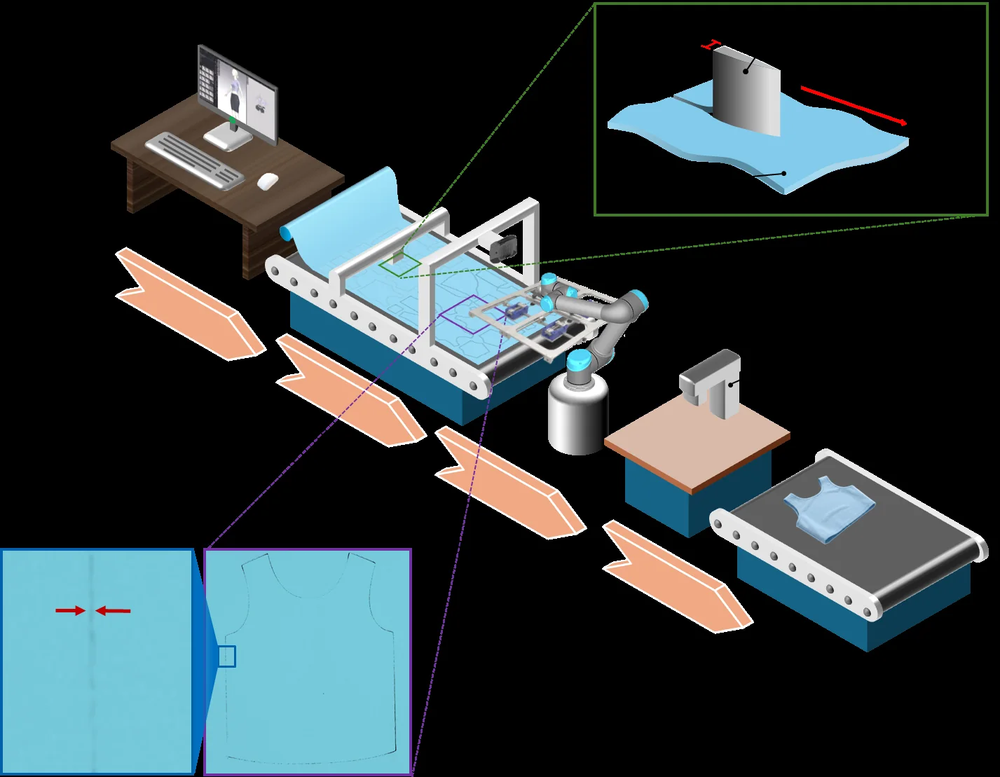

Vision-guided robotic gripping for flexible fabric
Explore how 3D sensing, multimodal perception, offline FEM analysis, and sequential optimization connect to four-point robotic gripping and fold-minimized placement.
Choose a stage, orbit the model, or play the full sequence. Hover or focus a component to inspect its role.

Project-system overview. The interactive model will appear when WebGL is available.
Preparing 3D system…
Isometric view
Drag to orbit · Scroll to zoom · Select a component to inspect
Research foundation
Two complementary layers of the system
Two public records describe the evolution from a data-driven, FEM-based conference framework to the validated journal-scale manipulation system.
Journal article · 2026Published
Vision-guided gripping process with minimizing folding for flexible fabric materials by integrating a sequential optimization algorithm and FEM analysis
Robotics and Autonomous Systems, 198, 105349
Four precomputed gripping points connect CAD registration and FEM-informed sequential optimization to an industrial robot equipped with adjustable needle grippers.
57.8%flatness-index reduction in the reported optimization example
40/40fold-free placements across two tested garment shapes
Data-Driven Vision and FEM-Based Sequential Optimization for Fold-Minimized Robotic Fabric Gripping
2025 IEEE International Conference on Big Data, 2616–2618
The conference paper presents the compact research framework linking data-driven visual localization, FEM analysis, and sequential gripping-point optimization.
Visiondata-driven fabric localization for robotic handling
FEMsequential search for fold-minimized gripping points
The camera captures the workspace. Visual and geometric signals support boundary recovery, while registration places target geometry in the robot frame.
02
Optimize offline
FEM analyses and sequential search precompute four gripping locations. The browser retrieves illustrative states; it does not run LS-DYNA or solve FEM in real time.
03
Grasp and place
The needle grippers engage at the selected points, preserve their geometric relationship during transfer, and release the part on the target bed.
Accuracy note
This experience is an explanatory 3D visualization, not a live robot controller or an independently reproduced experiment. Deformation, heatmaps, timing, and trajectories are simplified representations of reported methods and results. Performance values apply to the stated datasets, hardware, materials, shapes, and test conditions.